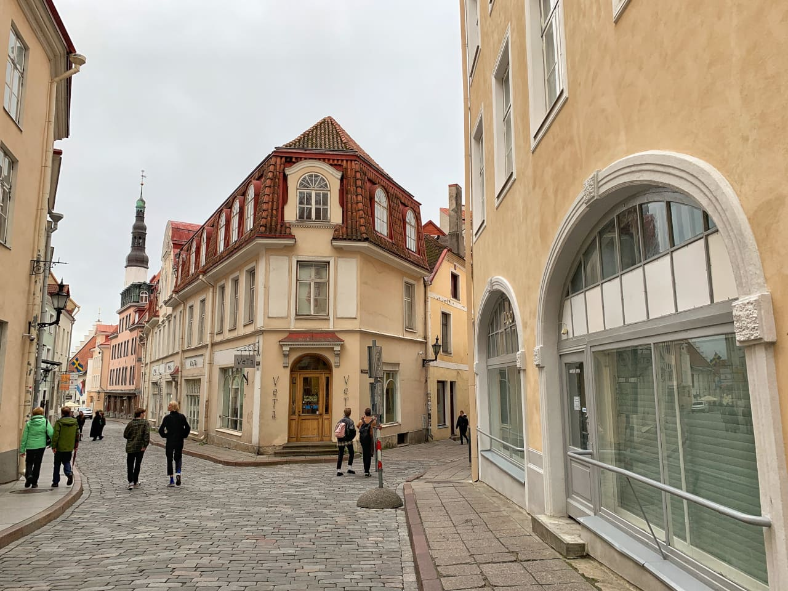
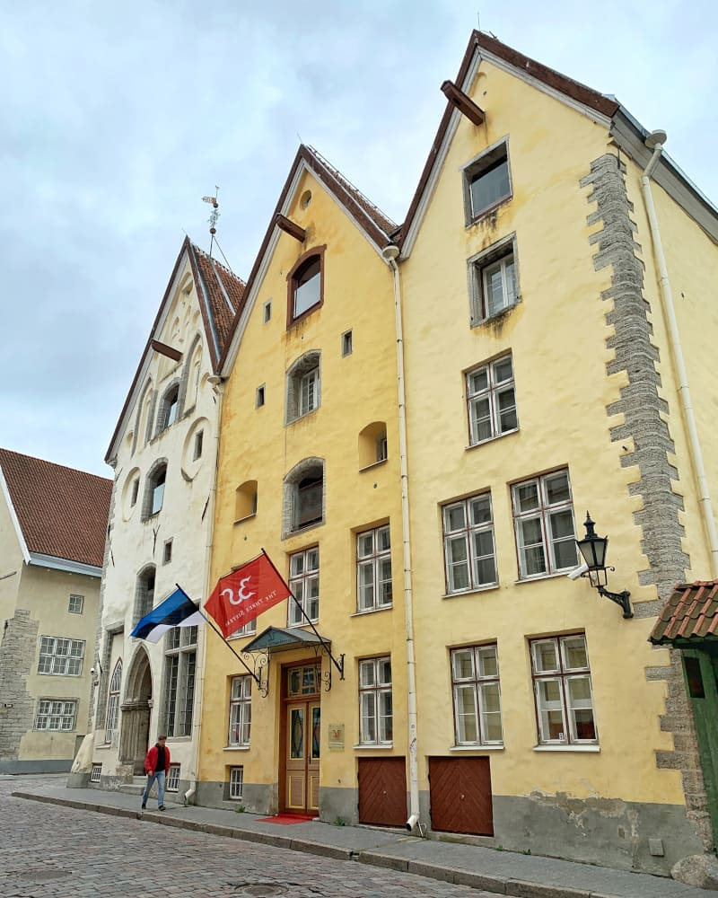
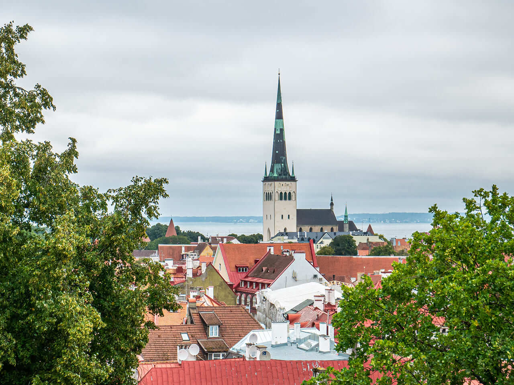

Tallinn był silnym ośrodkiem gospodarczym już w X w. Często osiedlali się w nim kupcy fińscy. W 1154 r. arabski uczony Al-Idrisi wspominał o grodzie Kaluri (dawna nazwa Tallinna, która po raz pierwszy występuje w latopisie ruskim 1223 r. – Koływań[4], prawdopodobnie wśród Finów i Estów nazwa ta brzmiała Kalevanlinna). W 1219 r. król duński Waldemar II Zwycięski, odbywający wyprawę krzyżową przeciw pogańskim Estom, zdobył fiński zamek Lyndanise[5], który kazał zburzyć i zbudować nową twierdzę. W językach fińskim i estońskim nazwa Tallinn tłumaczy się na „miasto duńskie” (taani linn) albo „miasto rolnicze” (talu linn). Inne – oprócz Kolyvana lub Kalevanlinna – historyczne warianty nazwy miasta to Rewal (Reval, Revalia, Rewel, Revel, Reveln) i Lindanisa (Lyndanise, Lindanäs); nazwa Tallinn obowiązuje od 1918.
W 1227 r. Duńczycy – po klęsce pod Bornhöved – utracili miasto na korzyść zakonu kawalerów mieczowych. Trzy lata później miasto – jako Rewel – ponownie uzyskało prawa miejskie. Duńczycy, którzy w 1236 ponownie zawładnęli miastem, potwierdzili lokację na prawie lubeckim w 1248. Rozpoczęli oni w 1265 budowę największych w tej części swoich ziem fortyfikacji, z murami liczącymi 2,5 km długości (jednymi z najdłuższych w średniowiecznej Europie), do 16 m wysokości, z 45 basztami. Po dwudziestu latach, w 1285 Rewel stał się członkiem Hanzy. W 1346 r. Estonia wraz z Rewlem została wykupiona przez zakon krzyżacki, który przebudował trzynastowieczny zamek na wzgórzu Toompea, dobudowując m.in. basztę „Długi Herman”.

Centrum miasta to wąskie uliczki, które pozwalają na spacer między kolorowymi kamieniczkami z historią siegającą setek lat wstecz. Rządzony na przestrzeni dziejów, m.in. przez Duńczyków, Niemców i Rosjan, Tallin to miks wpływów różnych kultur, który manifestuje się w estońskiej architekturze i sztuce. Urokliwe Stare Miasto w 1997 r. zostało wpisane na listę światowego dziedzictwa UNESCO.
W pierwszych chwilach zwiedzania Tallina, na tapet weźmy Dolne Miasto – tłumnie odwiedzaną przez turystów, pełną zabytków, muzeów i restauracji część stolicy Estonii. Układ mającego aż 113 hektarów Starego Miasta w Tallinie niewiele zmienił się od czasów burzliwego rozkwitu tego handlowego miasta w czasach średniowiecza.
Centrum miasta to wąskie uliczki, które pozwalają na spacer między kolorowymi kamieniczkami z historią siegającą setek lat wstecz. Rządzony na przestrzeni dziejów, m.in. przez Duńczyków, Niemców i Rosjan, Tallin to miks wpływów różnych kultur, który manifestuje się w estońskiej architekturze i sztuce. Urokliwe Stare Miasto w 1997 r. zostało wpisane na listę światowego dziedzictwa UNESCO.
W pierwszych chwilach zwiedzania Tallina, na tapet weźmy Dolne Miasto – tłumnie odwiedzaną przez turystów, pełną zabytków, muzeów i restauracji część stolicy Estonii. Układ mającego aż 113 hektarów Starego Miasta w Tallinie niewiele zmienił się od czasów burzliwego rozkwitu tego handlowego miasta w czasach średniowiecza.
Dotkliwe dla zabytkowej zabudowy, sowieckie bombardowanie Tallina w 1944 r. uszkodziło co prawda 10% budynków Starego Miasta, ale większość udało się sprawnie odbudować.

Trzy Siostry, czyli zespół trzech bliźniaczych kamienic w okolicach Fat Margaret, to jeden z najstarszych zabytków Tallina. Budynki powstały w 1362 r., więc ich fundamenty dźwigają prawie 700 lat burzliwej historii stolicy Estonii.
Budynki powstały prawdopodobnie dla trzech córek bogatego kupca, którego dzisiaj nazwalibyśmy inwestorem. Współcześnie w kamienicach działa obłędnie drogi, 5-gwiazdkowy hotel The Three Sisters Boutique Hotel, w którym pomieszczenia utrzymano w średniowiecznym klimacie. Jeśli zarezerwujesz tam nocleg to koniecznie daj znać, jak było. ;)
Mijaliśmy je codziennie w drodze z hotelu do centrum Tallina, przez co to jeden z zabytków miasta, który najmocniej zapadł nam w pamięć. Głupio było gapić się długo na budynek, bo wyglądaliśmy wtedy jakbyśmy mocno aspirowali do noclegu w tym miejscu, nie mając jednocześnie funduszy na spełnienie tego marzenia. ;)

Kościół św. Olafa to zdecydowanie najsilniejszy punkt w krajobrazie Starego Miasta w Tallinie. Świetnie widziany z daleka przez załogi płynących do Tallina statków oznajmiał, że docelowy port jest już blisko. Wszystko dzięki pierwotnie mierzącej aż 159 m wysokości (dzisiaj, po przebudowach, to 123 metry) wieży kościelnej.
Na szczycie kościoła św. Olafa działa punkt widokowy, z którego roztacza się piękny widok na całą okolicę. To najwyższy punkt Starego Miasta w Tallinie. Prowadzą do niego schody – przygotuj się więc na lekki wysiłek fizyczny.
Patronem kościoła, który powstał prawdopodobnie w XIII wieku, jest norweski król Olaf II. W XV i XVI wieku świątynia ta była najwyższym budynkiem na świecie. Legenda głosi, że na tak potężną bryłę kościoła zdecydowano się, aby jej ogrom przyciągał do miasta nowych kupców.
Zgodnie z legendą, władze miejskie miały problem ze znalezieniem kupca, który wybuduje tak duży kościół za pieniądze osiągalne dla budżetu Tallina. Śmiałek się znalazł – obiecał nawet, że zbuduje kościół za darmo, o ile kupcy odgadną jego imię. Gdy koniec budowy się zbliżał, przebiegli kupcy wysłali do domu budowniczego szpiega, który podsłuchał żonę majstra śpiewającą kołysankę dziecku.
ZABYTKI
Stare Miasto (VANNALIN)
Kamienice Trzy Siostry (Kolm Õde)
Kościół św. Olafa